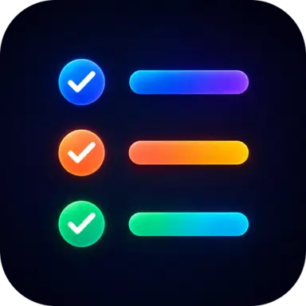
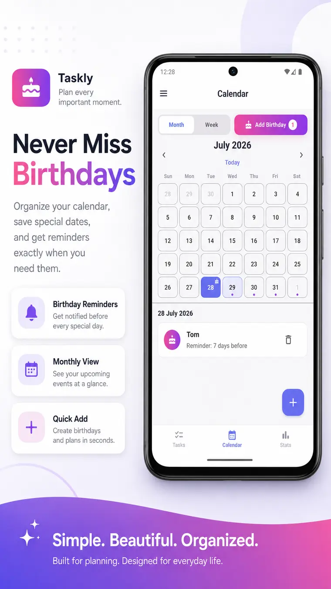
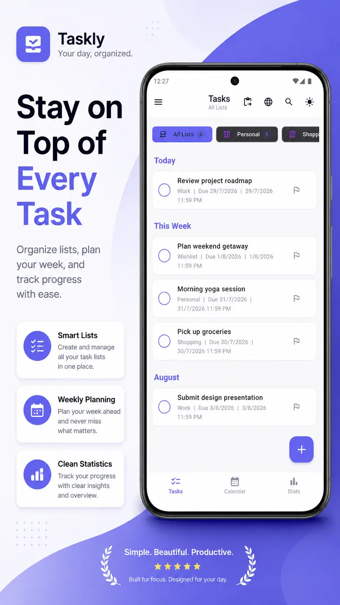
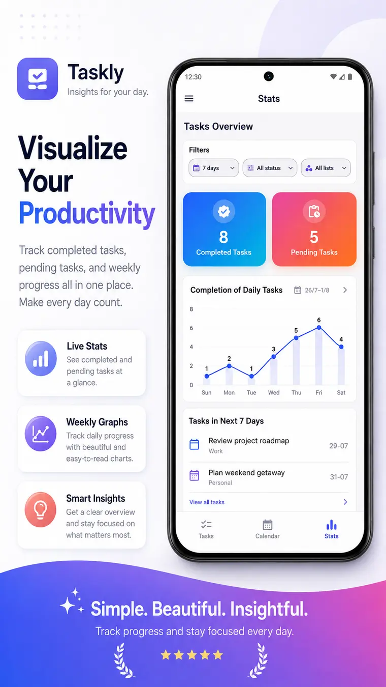
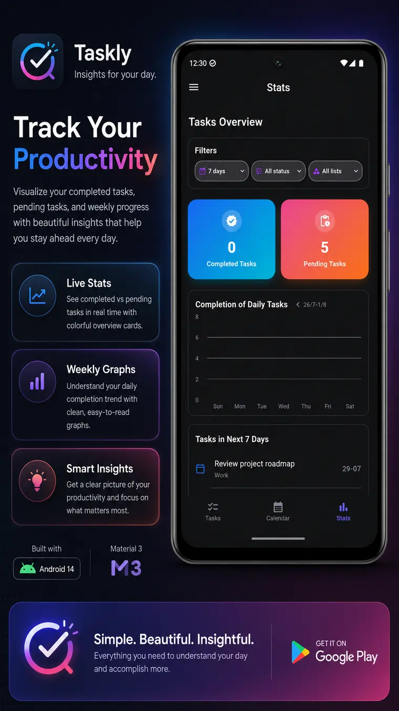
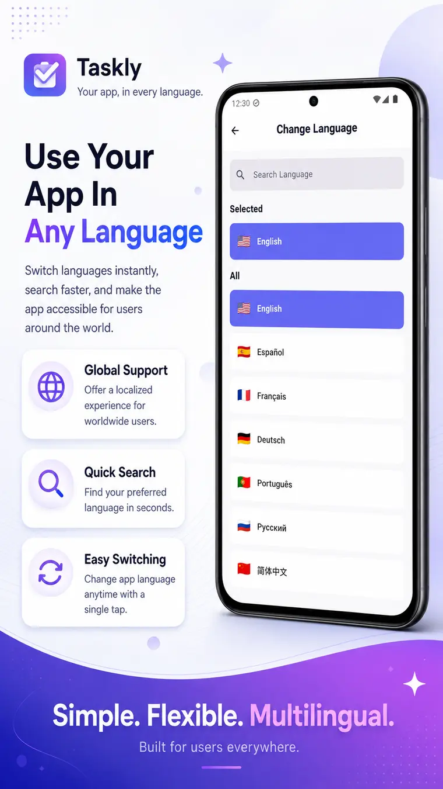

Create tasks quickly
Add the details you need, organize your day and mark work complete when it is done.

To Do List by Qunovix Technologies is a simple Android planner for organizing daily tasks, lists, birthdays and important reminders.

Plan simply. Finish confidently.Plan with less effort
From everyday errands to work priorities, To Do List keeps your plans clear and easy to act on.
Add the details you need, organize your day and mark work complete when it is done.
Keep work, personal plans, shopping lists and wishlists neatly separated.
Set task and birthday reminders with customizable notification options.
Review completed and pending tasks with useful statistics and progress insights.
Switch among supported languages and choose your preferred time and week settings.
Restore deleted items from the 15-day recycle bin and protect data with backup options.
Inside To Do List
Manage every task, visualize progress, use dark mode and switch languages without a complicated setup.




The developer
Qunovix Technologies is an independent app studio in Pune, India, building focused Android apps for everyday life.
To Do List is designed to make daily planning practical, flexible and easy to understand.
Discover Qunovix Technologies ↗Turn plans into progress
Create tasks, remember important dates and see your progress in one convenient planner.